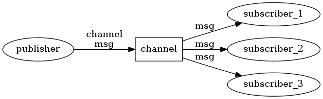

发布/订阅¶
Redis 通过 PUBLISH 、 SUBSCRIBE 和 PSUBSCRIBE 等命令实现发布和订阅功能。
这些命令被广泛用于构建即时通信应用，比如网络聊天室（chatroom）和实时广播、实时提醒等。
本文通过分析 Redis 源码里的 pubsub.c 文件，了解发布和订阅机制的底层实现，籍此加深对 Redis 的理解。
订阅、发布和退订¶
在开始研究源码之前，不妨先来回顾一下几个相关命令的使用方式。
PUBLISH 命令用于向给定的频道发送信息，返回值为接收到信息的订阅者数量：
redis> PUBLISH treehole "top secret here ..."
(integer) 0
redis> PUBLISH chatroom "hi?"
(integer) 1
SUBSCRIBE 命令订阅给定的一个或多个频道：
redis> SUBSCRIBE chatroom
Reading messages... (press Ctrl-C to quit)
1) "subscribe" # 订阅反馈
2) "chatroom" # 订阅的频道
3) (integer) 1 # 目前客户端已订阅频道/模式的数量
1) "message" # 信息
2) "chatroom" # 发送信息的频道
3) "hi?" # 信息内容
SUBSCRIBE 的返回值当中， 1) 为 subscribe 的是订阅的反馈信息，而 1) 为 message 的则是订阅的频道所发送的信息。
SUBSCRIBE 还可以订阅多个频道，这样一来它接收到的信息就可能来自多个频道：
redis> SUBSCRIBE chatroom talk-to-jack
Reading messages... (press Ctrl-C to quit)
1) "subscribe" # 订阅 chatroom 的反馈
2) "chatroom"
3) (integer) 1
1) "subscribe" # 订阅 talk-to-jack 的反馈
2) "talk-to-jack"
3) (integer) 2
1) "message" # 来自 chatroom 的消息
2) "chatroom"
3) "yahoo"
1) "message" # 来自 talk-to-peter 的消息
2) "talk-to-jack"
3) "Goodmorning, peter."
PSUBSCRIBE 提供了一种订阅符合给定模式的所有频道的方法，比如说，使用 it.* 为输入，就可以订阅所有以 it. 开头的频道，比如 it.news 、 it.blog 、 it.tweets ，诸如此类：
redis> PSUBSCRIBE it.*
Reading messages... (press Ctrl-C to quit)
1) "psubscribe"
2) "it.*"
3) (integer) 1
1) "pmessage"
2) "it.*" # 匹配的模式
3) "it.news" # 消息的来源频道
4) "Redis 2.6rc5 release" # 消息内容
1) "pmessage"
2) "it.*"
3) "it.blog"
4) "Why NoSQL matters"
1) "pmessage"
2) "it.*"
3) "it.tweet"
4) "@redis: when will the 2.6 stable release?"
当然， PSUBSCRIBE 也可以接受多个参数，从而匹配多种模式。
最后， UNSUBSCRIBE 命令和 PUNSUBSCRIBE 负责退订给定的频道或模式。
发布和订阅机制¶
当一个客户端通过 PUBLISH 命令向订阅者发送信息的时候，我们称这个客户端为发布者（publisher）。
而当一个客户端使用 SUBSCRIBE 或者 PSUBSCRIBE 命令接收信息的时候，我们称这个客户端为订阅者（subscriber）。
为了解耦发布者（publisher）和订阅者（subscriber）之间的关系，Redis 使用了 channel （频道）作为两者的中介 —— 发布者将信息直接发布给 channel ，而 channel 负责将信息发送给适当的订阅者，发布者和订阅者之间没有相互关系，也不知道对方的存在：
知道了发布和订阅的机制之后，接下来就可以开始研究具体的实现了，我们从 Redis 的订阅命令开始说起。
SUBSCRIBE 命令的实现¶
前面说到，Redis 将所有接受和发送信息的任务交给 channel 来进行，而所有 channel 的信息就储存在 redisServer 这个结构中：
struct redisServer {
// 省略 ...
dict *pubsub_channels; // Map channels to list of subscribed clients
// 省略 ...
};
pubsub_channels 是一个字典，字典的键就是一个个 channel ，而字典的值则是一个链表，链表中保存了所有订阅这个 channel 的客户端。
举个例子，如果在一个 redisServer 实例中，有一个叫做 news 的频道，这个频道同时被 client_123 和 client_456 两个客户端订阅，那么这个 redisServer 结构看起来应该是这样子：

可以看出，实现 SUBSCRIBE 命令的关键，就是将客户端添加到给定 channel 的订阅链表中。
函数 pubsubSubscribeChannel 是 SUBSCRIBE 命令的底层实现，它完成了将客户端添加到订阅链表中的工作：
// 订阅指定频道
// 订阅成功返回 1 ，如果已经订阅过，返回 0
int pubsubSubscribeChannel(redisClient *c, robj *channel) {
struct dictEntry *de;
list *clients = NULL;
int retval = 0;
/* Add the channel to the client -> channels hash table */
// dictAdd 在添加新元素成功时返回 DICT_OK
// 因此这个判断句表示，如果新订阅 channel 成功，那么 。。。
if (dictAdd(c->pubsub_channels,channel,NULL) == DICT_OK) {
retval = 1;
incrRefCount(channel);
/* Add the client to the channel -> list of clients hash table */
// 将 client 添加到订阅给定 channel 的链表中
// 这个链表是一个哈希表的值，哈希表的键是给定 channel
// 这个哈希表保存在 server.pubsub_channels 里
de = dictFind(server.pubsub_channels,channel);
if (de == NULL) {
// 如果 de 等于 NULL
// 表示这个客户端是首个订阅这个 channel 的客户端
// 那么创建一个新的列表， 并将它加入到哈希表中
clients = listCreate();
dictAdd(server.pubsub_channels,channel,clients);
incrRefCount(channel);
} else {
// 如果 de 不为空，就取出这个 clients 链表
clients = dictGetVal(de);
}
// 将客户端加入到链表中
listAddNodeTail(clients,c);
}
/* Notify the client */
addReply(c,shared.mbulkhdr[3]);
addReply(c,shared.subscribebulk);
// 返回订阅的频道
addReplyBulk(c,channel);
// 返回客户端当前已订阅的频道和模式数量的总和
addReplyLongLong(c,dictSize(c->pubsub_channels)+listLength(c->pubsub_patterns));
return retval;
}
PSUBSCRIBE 命令的实现¶
除了直接订阅给定 channel 外，还可以使用 PSUBSCRIBE 订阅一个模式（pattern），订阅一个模式等同于订阅所有匹配这个模式的 channel 。
和 redisServer.pubsub_channels 属性类似， redisServer.pubsub_patterns 属性用于保存所有被订阅的模式，和 pubsub_channels 不同的是， pubsub_patterns 是一个链表（而不是字典）：
struct redisServer {
// 省略 ...
list *pubsub_patterns; // A list of pubsub_patterns
// 省略 ...
};
pubsub_patterns 的每一个节点都是一个 pubsubPattern 结构的实例，它保存了被订阅的模式，以及订阅这个模式的客户客户端：
typedef struct pubsubPattern {
redisClient *client;
robj *pattern;
} pubsubPattern;
举个例子，假设在一个 redisServer 实例中，有一个叫做 news.* 的模式同时被客户端 client_789 和 client_999 订阅，那么这个 redisServer 结构看起来应该是这样子：

现在可以知道，实现 PSUBSCRIBE 命令的关键，就是将客户端和订阅的模式添加到 redisServer.pubsub_patterns 当中。
pubsubSubscribePattern 是 PSUBSCRIBE 的底层实现，它将客户端和所订阅的模式添加到 redisServer.pubsub_patterns 当中：
// 订阅指定模式
// 订阅成功返回 1 ，如果已经订阅过，返回 0
int pubsubSubscribePattern(redisClient *c, robj *pattern) {
int retval = 0;
// 向 c->pubsub_patterns 中查找指定 pattern
// 如果返回值为 NULL ，说明这个 pattern 还没被这个客户端订阅过
if (listSearchKey(c->pubsub_patterns,pattern) == NULL) {
retval = 1;
// 添加 pattern 到客户端 pubsub_patterns
listAddNodeTail(c->pubsub_patterns,pattern);
incrRefCount(pattern);
// 将 pattern 添加到服务器
pubsubPattern *pat;
pat = zmalloc(sizeof(*pat));
pat->pattern = getDecodedObject(pattern);
pat->client = c;
listAddNodeTail(server.pubsub_patterns,pat);
}
/* Notify the client */
addReply(c,shared.mbulkhdr[3]);
addReply(c,shared.psubscribebulk);
// 返回被订阅的模式
addReplyBulk(c,pattern);
// 返回客户端当前已订阅的频道和模式数量的总和
addReplyLongLong(c,dictSize(c->pubsub_channels)+listLength(c->pubsub_patterns));
return retval;
}
PUBLISH 命令的实现¶
使用 PUBLISH 命令向订阅者发送消息，需要执行以下两个步骤：
- 使用给定的频道作为键，在
redisServer.pubsub_channels字典中查找记录了订阅这个频道的所有客户端的链表，遍历这个链表，将消息发布给所有订阅者。 - 遍历
redisServer.pubsub_patterns链表，将链表中的模式和给定的频道进行匹配，如果匹配成功，那么将消息发布到相应模式的客户端当中。
举个例子，假设有两个客户端分别订阅 it.news 频道和 it.* 模式，当执行命令 PUBLISH it.news "hello moto" 的时候， it.news 频道的订阅者会在步骤 1 收到信息，而当 PUBLISH 进行到步骤 2 的时候， it.* 模式的订阅者也会收到信息。
PUBLISH 命令的实际实现由 pubsubPublishMessage 函数完成，它的完整定义如下：
// 发送消息
int pubsubPublishMessage(robj *channel, robj *message) {
int receivers = 0;
struct dictEntry *de;
listNode *ln;
listIter li;
/* Send to clients listening for that channel */
// 向所有频道的订阅者发送消息
de = dictFind(server.pubsub_channels,channel);
if (de) {
list *list = dictGetVal(de); // 取出所有订阅者
listNode *ln;
listIter li;
// 遍历所有订阅者， 向它们发送消息
listRewind(list,&li);
while ((ln = listNext(&li)) != NULL) {
redisClient *c = ln->value;
addReply(c,shared.mbulkhdr[3]);
addReply(c,shared.messagebulk);
addReplyBulk(c,channel); // 打印频道名
addReplyBulk(c,message); // 打印消息
receivers++; // 更新接收者数量
}
}
/* Send to clients listening to matching channels */
// 向所有被匹配模式的订阅者发送消息
if (listLength(server.pubsub_patterns)) {
listRewind(server.pubsub_patterns,&li); // 取出所有模式
channel = getDecodedObject(channel);
while ((ln = listNext(&li)) != NULL) {
pubsubPattern *pat = ln->value; // 取出模式
// 如果模式和 channel 匹配的话
// 向这个模式的订阅者发送消息
if (stringmatchlen((char*)pat->pattern->ptr,
sdslen(pat->pattern->ptr),
(char*)channel->ptr,
sdslen(channel->ptr),0)) {
addReply(pat->client,shared.mbulkhdr[4]);
addReply(pat->client,shared.pmessagebulk);
addReplyBulk(pat->client,pat->pattern); // 打印被匹配的模式
addReplyBulk(pat->client,channel); // 打印频道名
addReplyBulk(pat->client,message); // 打印消息
receivers++; // 更新接收者数量
}
}
decrRefCount(channel); // 释放用过的 channel
}
return receivers; // 返回接收者数量
}
UNSUBSCRIBE 和 PUNSUBSCRIBE 的实现¶
UNSUBSCRIBE 和 PUNSUBSCRIBE 分别是 SUBSCRIBE 和 PSUBSCRIBE 的反操作，如果明白了 SUBSCRIBE 和 PSUBSCRIBE 的工作机制的话，应该不难理解这两个反操作的原理，所以这里就省略详细的分析了，有兴趣的可以直接看代码。
小节¶
Redis 的 pubsub 机制的分析就到此结束了，跟往常一样，带有注释的完整 pubsub.c 文件可以到我的 GITHUB 上找： https://github.com/huangz1990/reading_redis_source 。
Have fun 。